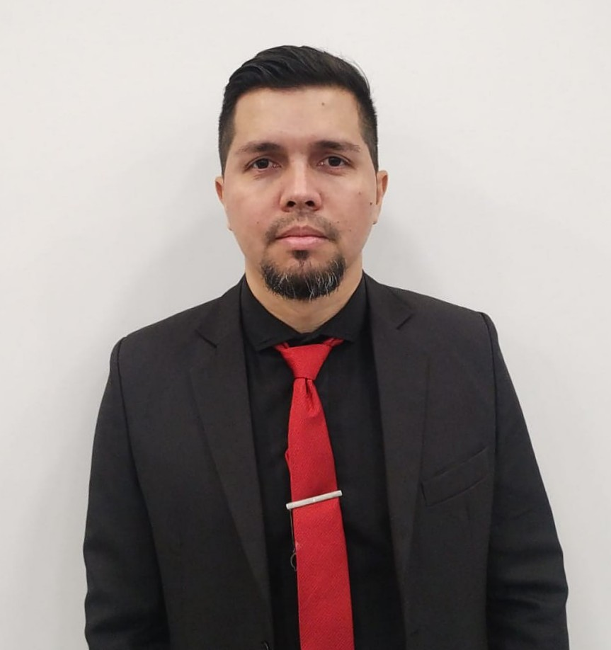

Soy Ingeniero Mecánico de la Universidad de Oriente (UDO) y Desarrollador Frontend en formación continua. Mi pasión por la tecnología me llevó a fusionar el análisis técnico con el desarrollo web, creando soluciones digitales responsivas y centradas en el usuario.
Actualmente trabajo como Inspector Mecánico en Coltec Ciudadela, donde aplico metodologías de control de calidad y análisis de datos. En paralelo, sigo formándome en React, JavaScript y buenas prácticas de desarrollo. Busco formar parte de equipos innovadores en el ámbito IT, aportando mi visión multidisciplinaria.
Coltec Ciudadela · Evaluación de seguridad vehicular, manejo de software de medición y análisis de datos operacionales.
Formación intensiva en JavaScript, React, HTML5, CSS3 y metodologías ágiles.
Petrolera Sinovensa / PDVSA · Supervisión de bombas hidráulicas y generación de reportes técnicos.
Universidad de Oriente (UDO) · Título otorgado: Ingeniero Mecanico.